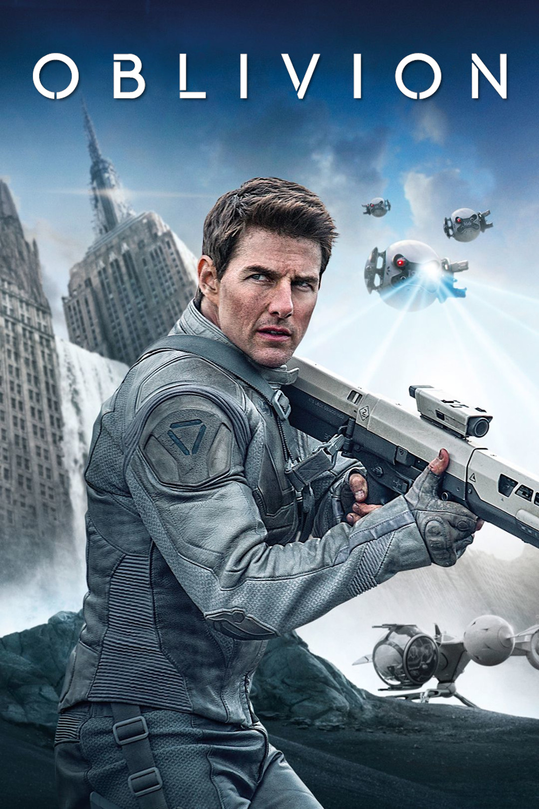

Мировая премьера: 19 апреля 2013
Слоган: Земля – это память, за которую стоит бороться.
Сюжет: Джек Харпер – один из последних оставшихся сотрудников технической станции, расположенной на почти опустевшей, разрушенной от инопланетных вторжений Земле. Он участвует в масштабной операции по извлечению жизненно важных ресурсов, и его миссия почти окончена. Но спасение таинственной незнакомки с разбившегося космического корабля заставляет героя усомниться в том, во что он верил, и навсегда меняет его жизнь, а также судьбу всего человечества.
Режиссёр: Джозеф Косински
В ролях: |
Том Круз | Джек Харпер |
| Андреа Райзборо | Виктория Олсен | |
| Морган Фриман | Малкольм Бич | |
| Ольга Куриленко | Юлия Русакова | |
| Мелисса Лео | Салли | |
| Николай Костер-Вальдау | Сержант Сайкс |
Бюджет: $ 120 млн.
Кассовые сборы в США: $ 89 млн.
Кассовые сборы в мире: $ 286 млн.
Продолжительность: 1 ч. 58 мин.
Рейтинг: 7.0